Schedule
| 9:30am | Opening remarks |
| 9:45am | McKinsey Institute for Black Economic Mobility |
| 10:30am | Break |
| 10:45am | Founder Panel: Raising While Black |
| 11:45am | Break |
| 12:00pm | Lunch |
| 1:30pm | Pitch competition |
| 3:00pm | Break |
| 3:15pm | VC Panel: The Black VC Journey |
| 4:00pm | Closing remarks |
Founder Panel: Raising While Black
 Songe LaRon
CEO @ Squire
Songe LaRon
CEO @ Squire
Songe LaRon is the Co-Founder and CEO of SQUIRE Technologies. Founded in 2015, SQUIRE created a new software category- barbershop business management- to reinvent the way daily operations are handled and give barbers and shop owners the tools they need for the business side of barbering. Today, SQUIRE delivers the only all-in-one barbershop management platform to over 3,000 barbershops— with 7.6 million clients having booked appointments through the platform.
LaRon spent the early part of his career as a corporate lawyer. And, while he experienced success, he yearned to put his energy towards the thing that mattered most to him. He wanted to help build wealth in his community in a way that would create a lasting impact.His vision was to use his business experience to help elevate an industry that he knew played a critical role in all communities: the barbershop. He saw the opportunity for barbershops to be more efficient and effective in running their businesses and so he set out to build the tools they’d need to do it.
In partnership with Co-Founder and President, Dave Salvant, he has led SQUIRE to remarkable growth: the company is now valued at $750m after completing a Series D fundraising round led by Tiger Global- increasing its valuation by 30x in two years.
As CEO he believes it’s his job to be an innovator and uses that mindset to set strategic direction for the company. He is proud of the incredible growth SQUIRE has experienced taking on innovation for one of the oldest professions in the world, but is most proud to have built a company that truly respects the value and impact of barbershops on their communities while doing so. When asked what he wants to be remembered for, LaRon says, “As someone who made a positive impact and changed people’s lives. Who really tried to go big for something and succeeded. As someone who gave it his all.” LaRon earned his J.D. from Yale Law School and graduated Cum Laude from UCLA with a degree in Philosophy.
Khadesha Okwudili is the Founder, CEO of Agapé: a relationship wellness app loved by over a million users and backed by world class investors like Y-Combinator and Harlem Capital.
Travis Holoway is the Co-Founder and CEO of SoLo (SoLo Funds), a leading financial service company for everyday Americans, enabling community banking and lending solutions. SoLo has processed over 450,000 loans as one of the fastest-growing Fintech companies in the U.S. and is grounded by an impactful mission: to build a community that enables financial autonomy for all. Prior to founding SoLo, Travis built his career in the financial services industry as a financial advisor at Northwestern Mutual. Travis is a graduate of the University of Cincinnati and has been recognized with awards such as 2020 Startup of the Year, Inclusive Fintech 50, and Forbes 1000. He has been quoted in various publications and websites, including CNBC, Forbes, American Banker, TechCrunch, and Crunchbase.
Markea Dickinson-Frasier (Yale SOM '20) is passionate about democratizing access to resources for the underserved, and serving as a voice in spaces where certain voices aren't represented. She was a student-athlete at Penn State University during undergrad, where she ran cross country and track. Upon graduation, she worked at Unilever in various Supply Chain roles, including managing employees in a manufacturing facility. After a few years, she decided to pursue her MBA at Yale SOM and venture into entrepreneurship. While at Yale, she partnered with her mother, Debbie Dickinson, to launch Thermaband: a health-tech company that provides a smart bracelet with cooling/warming sensations and companion app for those with thermal discomfort, particularly suited for menopausal women with hot flashes.
VC Panel: The Black VC Journey
Wayne Kimball, Jr., currently serves as Principal for Google Cloud's Go-to-Market Strategy and Mergers & Acquisitions business. He is also the founder and global leader of Google’s TechAMPLIFY,an initiative to accelerate the growth and sustainability of traditionally untapped, diverse startups.Kimball previously served in corporate strategy leadership roles at Accenture and the ActOneGroup, and specializes in business strategy and enterprise transformation. He is also an investor,startup advisor, and independent board director.
Passionate about the landscape of education and eradicating poverty through access, exposure and opportunity, Kimball currently serves on the Board of Directors for Christel House International (global charter school network), the NC School of Science and Mathematics (NCSSM) Foundation, and Alpha Phi Alpha Fraternity, Inc., in which he is a life member and Vice President of the Western Region. He formerly served on the NC A&T State University Board of Trustees, and as Vice Chair of the Alumni Association Board of Directors.
Kimball earned his MBA in International Business at Loyola University Chicago – Quinlan School of Business and his bachelors in Civil Engineering at North Carolina A&T State University. He lives in Los Angeles, CA with his wife, Savannah.
Chisom A’Marie is a Vice President at New Voices Fund, a venture capital firm focused on investing in entrepreneurs of color in the consumer and consumer tech space. She has always had a passion for driving equity and doesn’t take lightly her role in assisting entrepreneurs in growing sustainable businesses and ultimately generational wealth. Prior to New Voices Fund, Ms. A’Marie was in investment banking at Citi covering Power, Utilities, and Renewable Energy. Chisom graduated from Carnegie Mellon University with a Bachelor of Science in Chemical Engineering and Engineering & Public Policy (EPP) and from Yale School of Management with an MBA.
Livi Gran ze’s t is a venture capital investor at Greycroft. She joined the firm in August 2021 and is based in New York City. She focuses on early-stage companies in enterprise software and fintech.
Prior to Greycroft, Livi was a Business Development & Strategy Analyst at Microsoft, where she worked with the M365 Commercial Ecosystem and Artificial Intelligence & Mixed Reality teams to drive strategic partnership initiatives and transactions within the startup ecosystem to accelerate growth for Microsoft and its customers.
Livi holds a BS in Business Administration (summa cum laude) from Florida A&M University’s School of Business and Industry. She is a proud member of the Alpha Kappa Alpha Sorority, Inc. and actively supports the Black Venture Capital Consortium, a non-profit organization missioned to increase diversity among investment professionals and entrepreneurs.
Daniel Acheampong is a Co-Founder and General Partner at Visible Hands, a venture capital firm that funds and empowers underrepresented founders launching high-growth startups. At the earliest stages of company-building, Visible Hands provides meaningful funding, personalized support, and social capital, helping our founders build exceptional technology startups. Daniel oversees investment processes at Visible Hands as the firm has made over 90 investments across multiple industries. He received a dual Masters in Business Administration from the Wharton School and Public Administration from Harvard Kennedy School. Prior to graduate school, Daniel was an associate at Summit Partners, a premier investment firm, where he managed the firm’s due diligence process to raise investment funds. Previously, he was a financial analyst at Goldman Sachs, where he supported senior management in supervising the New England Private Wealth Management business. Daniel received his Bachelor of Arts in Economics in from Brandeis University, where he was a Posse Scholar and Gates Millennium Scholar. He is an Entrepreneur In Residence at MIT’s DesignX and Venture Advisor at Tsai Center for Innovative Thinking at Yale University. He is a national board member of The Posse Foundation.